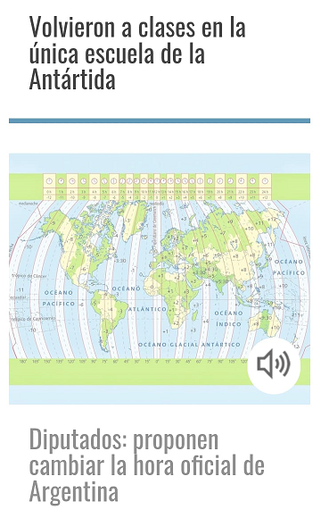

- Sistema Capicop
ANEXO III IDEA PARA NUEVO SISTEMA DE EMPRESAS EN NUESTRO PAIS: Joint Venture entre el Sistema Capitalista de libre mercado y las cooperativas.
Mas InfoEl Futuro, hoy.
Sitio en construcción: esta página no lleva control de visitas
Sepa disculpar las demoras en nuestras respuestas
En un mundo cada vez más conectado, Neigy'Group pretende unir a los estados, las instituciones intermedias y las empresas que los conforman buscando lograr eficientemente los objetivos comunes, generando un crecimiento sostenido que eleve la calidad de vida.
La colaboración, conectividad, transformación digital e Internet de las Cosas nos colocan, como seres humanos utilizando nuestra capacidad de comunicación, en el centro de todas las estrategias de crecimiento personal aprovechando las herramientas empíreas que nos son dadas a todos.
Dado el estado actual de nuestro planeta y las desviaciones vistas, donde interesa más los reditos que dá el poder, el dinero o las ambiciones desmedidas, es que iniciamos este canal de comunicación con Ustedes.
Dirigido especialmente a los cuidadanos del planeta que esperan vivir en un mundo libre, sin absurdos controles y dentro de un marco independiente, haciendo un fuerte llamado de atención a nuestro actual estado nacional y a cada estado soberano de nuestro hogar, llamado TIERRA. Los desarrollos que incluyen Tecnología actual en uso (o a desarrollarse en un futuro próximo), las ideas vertidas que pueden inducir a perseguir algún lucro cuando el objetivo real es el mejoramiento de la sociedad toda, o las sugerencias de futuros proyectos a convertirse en ley, cuyos destinatarios son los diferentes cuerpos legislativos; para ellos, y para todos, dejamos constancia que tienen derecho registrado de autor en la DNDA...ANEXO III IDEA PARA NUEVO SISTEMA DE EMPRESAS EN NUESTRO PAIS: Joint Venture entre el Sistema Capitalista de libre mercado y las cooperativas.
Mas InfoConsideraciones Preliminares del Anteproyecto:
Mas InfoBusca y logra evitar muertes en las Rutas Argentinas
.
Génesis de Conceptos / Espíritu de la Idea.
Descargar PDF Abrir en Nueva PestañaAplicación de I.A. en la Evaluación de Familias por Educadores y Equipos Psicológicos para la Toma de Decisiones Gubernamentales."
Ver ImagenPropuestas e ideas en
"Evaluaciones de Familias: Fomentando la Superación Personal y Resaltando Aspectos Positivos.
Ver Imagen 1Ver Imagen 2Algunas Ideas Afines
-
sistema de comunicaciones 7G en desarrollo y las comarcas municipales locales a implementar, en conjunto con las Economías Regionales Productivas aplicando el concepto "Capicop", son eslabones necesarios en el desarrollo regional de cada provincia Estos desarrollos en distintas áreas son algunas de las SUGERENCIAS para Lograr un Acuerdo Político Argentino necesario en los tiempos que corren, hablando del Político medio o promedio actual en Argentina, si pretendemos llegar a una Argentina madura, desarrollada, productiva e igualitaria para cada habitante, donde sin el consenso de todas las partes actoras sería imposible.
-
Entonces se propone: Generar nuevas empresas en Argentina que den mano de obra genuina a población regional, generando economías regionales nuevas, cuyos gerentes, directores ó "CEO's" de estas U.T.E. (las mencionadas "Joint Venture" en el desarrollo titulado Capicop), serán los responsables de aportar los capitales necesarios para el nacimiento y evolución de cada emprendimiento. Estos puestos gerenciales estarían conformados por aquellos políticos actuales y/o pasados (o por quienes ellos designen), de tal forma de transferirles la responsabilidad de la obtencion de los capitales necesarios, los cuales muchos mantienen ocultos con testaferros. Una forma de blanquear tal situación será esta
-
Se vuelve así al concepto de las "polis" griegas, pero mejoradas y potenciadas con las "democracias participativas municipales, provinciales y nacionales" actuales. Esto se complementa con los nuevo paradigmas en Atención Primaria de Salud (en desarrollo, próximamente se detallará), lo ya expresado sobre economías regionales (Capicop, C.U.I.Z. reemplazo del CUIL - CUIT.), reemplazo de los 170 impuestos actuales por uno Único aplicable a todo productor de bienes o Servicios, que junto con las Redes Comarcales 7G Anti Hacker's - tecnología huella digital en tarjeta física y monitoreo electrónico en línea harán al desarrollo indicado.
-
Se Proponen nuevos esquemas democráticos achicando el estado, empezando con: - Llevar el nro. de Diputados y Senadores a los existentes en 1910
- Revisión/Expulsión de Empleados en Planta Permanente designados políticamente (1983 a hoy). - LO INDICADO ARRIBA: Políticos y Testaferros -- a Ceo' s (que aportan Capital) en las Nuevas Economías Regionales a crearse. Modificación de las leyes de: - abortos programados - Tránsito: para evitar muertes en las Rutas Argentinas con los siguientes Tips: Conductores y App's c/ Sistemas Electrónicos de Control - Peajes; Nueva Homologación de conductores de moto- vehículos, motor home, vehículos livianos y pesados sin conductores.
- Nueva distribución de Municipios y Comunas en Cabeceras de Comarcas (modernización de los sistemas para reducir puestos redundantes de los servicios brindados en superficies chicas y medianas) - Distribución en Argentina de Acueductos, Sistemas cloacales y de comunicación infra superficie (Minería por tuneladora), favoreciendo a erradicar la contaminación visual actual (al menos en lo que a comunicaciones y transporte de energía se refiere). Erradicación total de la minería a cielo abierto que destruye ecosistemas turísticos y de flora-fauna Internacionales sobre: - Penas Capitales (en los países que las tengan implementada) por su reemplazo y puesta en marcha de los Módulos Estancos Sumergibles Educables Superadores - (MESES: Implementación en Argentina como prueba piloto primero). Estos Módulos, serán algunas de las U.T.E. indicadas arriba, con fabricación en nuestro país para nosotros y para el resto de los países del planeta que quieran compartir estas ideas, siendo así una de las varias Economías Regionales Comarcales a crear. Prevé y autoriza el único método humanitario que contempla los derechos humanos en la obtención de datos del cautivo para esclarecer crímenes cometidos que deriven en penas perpetuas y a perpetuidad. - Cambio de Horario Internacional: GTM x MTM; Grendwicht x Malvinas (Una de las pautas para la negociación con Inglaterra sobre la Soberanía de las Islas Malvinas, Georgias e Islas del Atlántico Sur, que por un tiempo pasaría a ser compartida y no exclusivamente de ellos como actualmente ostentan).
-
- Otras a desarrollar.
Quedamos gustosos a la espera de cualquier aporte o actividad que Ud, lector, quiera sumar a los conceptos aquí expresados, buscando el fin último de una mejor calidad de vida para todos y cada uno de nosotros.
+(54 9) 3544 58 1118
info@negygroup.ar
X5889 Mina Clavero
Córdoba - Argentina
{kind=link}
{kind=link}
{kind=link}
{kind=link}
{kind=link}